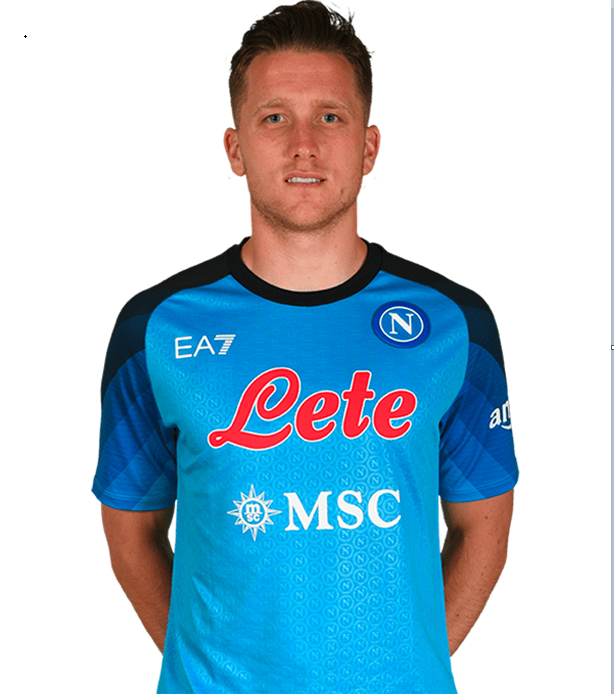

Personal Information
Name: Piotr Zieliński
Birthdate: May 20, 1994
Nationality: Polish
Height: 180 cm (5 feet, 11 inches)
Position: Central midfielder | #20
About The Player
Piotr Zieliński is a Polish professional footballer who plays as a central midfielder for the Italian Serie A club Napoli and the Poland national team. Born on May 20, 1994, in Poland, Zieliński began his professional career at the age of 17 with the Polish club Zagłębie Lubin. He later moved to Italy, where he played for clubs such as Udinese and Empoli before joining Napoli in 2016. Zieliński quickly became a key player for Napoli, known for his technical ability, vision, and long-range shooting. He is also versatile, capable of playing in multiple positions in midfield. Zieliński has represented the Poland national team since 2013, playing in major tournaments such as the UEFA European Championship and the FIFA World Cup. At 28 years old, Zieliński is considered one of the best midfielders in Serie A and is highly valued by both club and country.
| Statistics in All Competetions | |
|---|---|
| Appearances | 37 |
| Minutes Played | 2302 |
| Goals Scored | 7 |
| Assists | 9 |
| Passes | 1315 |
| Yellow Cards | 2 |
| Red Cards | 0 |